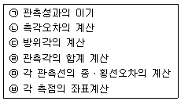
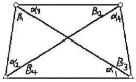
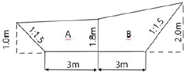
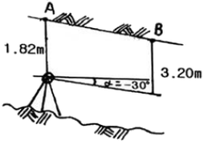
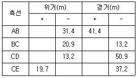
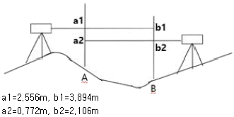
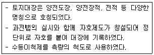

지적기사 (2018-08-19 기출문제)
1과목: 지적측량
1. 다음 중 오차의 성격이 다른 하나는?
- 기포의 둔감에서 생기는 오차
- 야장의 기입 착오로 생기는 오차
- 수준적(statt) 눈금의 오독으로 인해 생기는 오차
- 각 관측에서 시준점의 목표를 잘못 시준하여 생기는 오차
(정답률: 80%)

2. 평판측량방법에 따라 조준의를 사용하여 측정한 경사거리가 95m일 때 수평거리로 옳은 것은? (단, 조준의의 경사분획은 18이다.)
- 92.45m
- 90.50m
- 93.45m
- 93.50m
(정답률: 40%)
3. 경위의측량방법에 따라 도선법으로 지적도근점측량을 할 때, 지형 상 부득이 한 경우가 아닌 경우 지적기준점 상호간의 연결기준이 되는 것은?
- 결합도선
- 왕복도선
- 폐합도선
- 회귀도선
(정답률: 73%)
4. 지적측량에 사용하는 직각좌표계의 투영원점에 가산하는 종ㆍ횡선 값으로 옳은 것은? (단, 세계측지계에 따르지 아니하는 지적측량의 경우이다.)
- 종선 : 200000m, 횡선 : 500000m
- 종선 : 500000m, 횡선 : 200000m
- 종선 : 1000000m, 횡선 : 500000m
- 종선 : 2000000m, 횡선 : 5000000m
(정답률: 80%)
5. 경위의측량방법에 따른 세부측량의 관측 및 계산에서, 수평각의 측각공차 중 1회 측정각과 2회 측정각의 평균값에 대한 교차 기준은?
- 30초 이내
- 40초 이내
- 50초 이내
- 60초 이내
(정답률: 58%)
6. 다음 중 지적도근점측량에서 지적도근점을 구성하는 도선의 형태에 해당하지 않는 것은?
- 개방도선
- 결합도선
- 폐합도선
- 다각망도선
(정답률: 77%)
7. 지적기준점 등의 제도에 관한 설명으로 옳은 것은?
- 삼각점 및 지적기준점은 0.1mm 폭의 선으로 제도한다.
- 지적도근점은 직경 1mm, 2mm의 2중원으로 제도한다.
- 지적삼각점은 직경 3mm의 원으로 제도하고 원 안에 십자선을 표시한다.
- 지적삼각보조점은 직경 2mm의 원으로 제도하고 원 안에 십자선을 표시한다.
(정답률: 58%)
8. 2점간의 거리가 123.00m이고 2점간의 횡선차가 1⑤.64m일 때, 2점간의 종선차는?
- 52.25m
- 63.00m
- 100.54m
- 101.00m
(정답률: 68%)
9. 각 관측 시 발생하는 기계 오차와 소거법에 대한 설명으로 옳지 않은 것은?
- 외심 오차는 시준선에 편심이 나타나 발생하는 오차로, 정위와 반위의 평균으로 소거된다.
- 연직축 오차는 수평축과 연직축이 직교하지 않기 때문에 생기는 오차로, 정위와 반위의 평균으로 소거된다.
- 수평축 오차는 수평축이 수직축과 직교하지 않기 때문에 생기는 오차로, 정위와 반위의 평균으로 소거된다.
- 시준축 오차는 시준선과 수평축이 수직축과 직교하지 않기 때문에 생기는 오차로, 망원경의 정위와 반위를 측정하여 평균값을 취하면 소거된다.
(정답률: 73%)
10. 세부측량을 하는 경우 필지마다 면적을 측정하여야 하는 대상이 아닌 것은?
- 분할
- 합병
- 신규등록
- 등록전환
(정답률: 72%)
11. 지적도근점측량 중 배각법에 의한 도선의 계산 순서를 올바르게 나열한 것은?

- ㉠-㉡-㉢-㉣-㉤-㉥
- ㉠-㉡-㉣-㉢-㉤-㉥
- ㉠-㉣-㉡-㉢-㉤-㉥
- ㉠-㉢-㉣-㉡-㉥-㉤
(정답률: 54%)
12. 임야도를 갖춰 두는 지역의 세부측량에서, 지적도의 축척에 따른 측량성과를 임야도의 축척으로측량결과도에 표시하는 방법으로 옳은 것은?
- 임야 경계선과 도곽선을 접합하여 임의로 임야측량결과도에 전개하여야 한다.
- 임야도의 축척에 따른 임야 경계선의 좌표를 구하여 임야측량결과도에 전개하여야 한다.
- 지적도의 축척에 따른 임야 분할선의 좌표를 구하여 임야측량결과도에 전개하여야 한다.
- 지적도의 축척에 따른 측량결과도에 표시된 경계점의 좌표를 구하여 임야측량결과도에 전개하여야 한다.
(정답률: 57%)
13. 다음 중 지적도근점측량을 실시하는 경우에 해당하지 않는 것은?
- 축척변경을 위한 측량을 하는 경우
- 도시개발사업 등으로 인하여 지적확정측량을 하는 경우
- 지적도근점의 재설치를 위하여 지적삼각점의 설치가 필요한 경우
- 측량지역의 면적이 해당 지적도 1장에 해당하는 면적 이상인 경우
(정답률: 48%)
14. 경위의측량방법에 따른 지적삼각점의 수평각 관측 시 윤곽도로 옳은 것은?
- 0도, 60도, 120도
- 0도, 45도, 90도
- 0도, 90도, 190도
- 0도, 30도, 60도
(정답률: 81%)
15. 다음 중 거리 측정에 따른 오차의 보정량이 항상 (-)가 아닌 것은?
- 장력으로 인한 오차
- 줄자의 처짐으로 인한 오차
- 측선이 수평이 아님으로 인한 오차
- 측선이 일직선이 아님으로 인한 오차
(정답률: 60%)
16. 지적삼각점측량에서 원점에서부터 두 점 A, B점까지의 횡선거리가 각각 16km와 20km일 때 축척계수(K)는? (단, R=6372.2km이다.)
- 1.00000072
- 1.00000177
- 1.00000274
- 1.00000399
(정답률: 33%)
17. 전파기 측량방법에 따라 다각망도선법으로 지적삼각보조점측량을 할 때의 기준으로 옳은 것은?
- 1도선의 거리는 4km 이하로 한다.
- 3점 이상의 기지점을 포함한 폐합다각방식에 따른다.
- 1도선의 점의 수는 기지점을 제외하고 5점 이하로 한다.
- 1도선은 기지점과 기지점, 교점과 교점 간의 거리이다.
(정답률: 71%)
18. 다음 중 지적측량의 방법에 해당되지 않는 것은?
- 관성측량
- 위성측량
- 경위의측량
- 전파기측량
(정답률: 82%)
19. 사각망 조정계산에서 관측각이 다음과 같을 때, α1의 각규약에 의한 조정량은? (단, α1=48°31‘50.3“, β2=53°03’57.2”, α3=22°44‘29.2“, β4=27°16’36.9”)

- ±0.2"
- -0.2"
- ±0.4"
- -0.4"
(정답률: 59%)
20. 평판측량방법으로 세부측량을 할 때에 지적도, 임야도에 따라 측량준비 파일에 포함하여 작성하여야 할 사항에 해당되지 않는 것은?
- 지적기준점 및 그 번호
- 측량방법 및 측량기하적
- 인근 초지의 경계선, 지번 및 지목
- 측량대상 토지의 경계선, 지번 및 지목
(정답률: 64%)
2과목: 응용측량
21. 그림과 같은 노선 횡단면의 면적은?

- 13.95m2
- 14.95m2
- 15.95m2
- 16.95m2
(정답률: 47%)
22. 완화곡선의 성질에 대한 설명으로 옳지 않는 것은?
- 곡선반지름은 완화곡선의 시점에서 무한대, 종점에서 원곡선의 반지름(R)으로 된다.
- 완화곡선의 접선은 시점에서 원호에, 종점에서는 직선에 접한다.
- 완화곡선에 연한 곡선반지름의 감소율은 캔트의 증가율과 같다.
- 종점에 있는 캔트는 원곡선의 캔트와 같게 된다.
(정답률: 67%)
23. GNSS 측량에서 위치를 결정하는 기하학적인 원리는?
- 위성에 의한 평균계산법
- 무선항법에 의한 후방교회법
- 수신기에 의하여 처리하는 자료해석법
- GNSS에 의한 폐합 도선법
(정답률: 59%)
24. 곡선반지름이 80m, 클로소이드 곡선길이가 20m일 때 클로소이드의 파라미터(A)는?
- 40m
- 80m
- 120m
- 1600m
(정답률: 64%)
25. 항공사진측량을 통하여 촬영된 사진에서 볼 때 태양광선을 받아 주위보다 밝게 찍혀 보이는 부분을 무엇이라 하는가?
- Sun spot
- Lineament
- Overlay
- Shadow spot
(정답률: 80%)
26. 초점거리 210mm의 카메라로 비고가 50m인 구릉지에서 촬영한 사진의 축척이 1:25000이다. 이 사진의 비고에 의한 최대 변위량은? (단, 사진크기=23cm×23cm, 종중복도=60%)
- ±0.15mm
- ±0.24mm
- ±1.5mm
- ±2.4mm
(정답률: 47%)
27. 터널구간의 고저차를 관측하기 위하여 그림과 같이 간접수준측량을 하였다. 경사각은 부각 30°이며, AB의 경사거리가 18.64m이고 A점의 표고가 200.30m일 때 B점의 표고는?

- 182.78m
- 189.60m
- 190.92m
- 192.36m
(정답률: 36%)
28. 수준측량에서 전시와 후시의 거리를 같게 하여 소거할 수 있는 오차는?
- 표척의 눈금 오차
- 레벨의 침하에 의한 오차
- 지구의 곡률 오차
- 레벨과 표척의 경사에 의한 오차
(정답률: 51%)
29. GNSS에서 이중차분법(Double Differencing)에 대한 설명으로 옳은 것은?
- 1개의 위성을 동시에 추적하는 2대의 수신기는 이중차 관측이다.
- 여러 에포크에서 2개의 수신기로 추적되는 1개의 위성 관측을 통하여 얻을 수 있다.
- 여러 에포크에서 1개의 수신기로 추적되는 2개의 위성 관측을 통하여 얻을 수 있다.
- 동시에 2개의 위성을 추적하는 2개의 수신기는 이중차 관측이다.
(정답률: 62%)
30. 지상에서 이동하고 있는 물체가 사진에 나타나 그 물체를 입체시할 때 그 운동이 기선방향이면 물체가 뜨거나 가라앉아 보이는 현상(효과)은?
- 정사 효과(orthoscopic effect)
- 역 효과(pseudoscopic effect)
- 카메론 효과(cameron effect)
- 반사 효과(reflection effect)
(정답률: 73%)
31. 등고선의 특징에 대한 설명으로 틀린 것은?
- 등고선은 경사가 급한 곳에서는 간격이 좁다.
- 경사변환점은 능선과 계곡선이 만나는 점이다.
- 능선은 빗물이 이 능선을 경계로 좌우로 흘러 분수선이라고도 한다.
- 계곡선은 지표가 낮거나 움푹 파인 점을 연결한 선으로 합수선이라고도 한다.
(정답률: 51%)
32. 지형의 표시방법 중 길고 짧은선으로 지표의 기복을 나타내는 방법은?
- 영선법
- 채색법
- 등고선법
- 점고법
(정답률: 77%)
33. 수준측량의 기고식에 대한 설명으로 옳은 것은?
- 중력 측정을 통한 기계적 고도 수정 방법
- 시준축 오차를 소거하기 위한 수준 측량 방법
- 기압 측정을 통한 간접 수준 측량 방법
- 중간점이 많은 경우에 편리한 야장 기입 방법
(정답률: 81%)
34. 곡선 반지름이 150m, 교각이 90°인 단곡선에서 기점으로부터 교점까지의 추가거리가 1273.45m일 때, 기점으로부터 곡선 시점(B.C)까지의 추가거리는?
- 1034.25m
- 1123.45m
- 1245.56m
- 1368.86m
(정답률: 58%)
35. 터널공사를 위한 트래버스 측량의 결과가 다음 표와 같을 때 직선 EA의 거리와 EA의 방위각은?

- 74.39m, 52°35'53.5"
- 74.39m, 232°35‘53.5“
- 75.40m, 52°35‘53.5“
- 7540m, 232°35‘53.5“
(정답률: 46%)
36. 교호수준측량을 실시하여 다음 결과를 얻었다. A점의 표고가 56.674m일 때 B점의 표고는?

- 54.130m
- 54.768m
- 55.338m
- 57.641m
(정답률: 49%)
37. 어떤 도로에서 원곡선의 반지름이 200m일 때 현의 길이 20m에 대한 편각은?
- 2°51‘53“
- 3°49‘11“
- 5°44‘02“
- 8°21‘12“
(정답률: 55%)
38. 축척 1:50000 지형도에서 주곡선의 간격은?
- 5m
- 10m
- 20m
- 100m
(정답률: 75%)
39. 항공사진 투영방식(A)과 지도 투영방식(B)의 연결이 옳은 것은?
- (A)정사투영, (B)중심투영
- (A)중심투영, (B)정사투영
- (A)평행투영, (B)중심투영
- (A)평행투영, (B)정사투영
(정답률: 69%)
40. FGNSS의 구성요소 중 위성을 추적하여 위성의 궤도와 정밀시간을 유지하고 관련정보를 송신하는 역할을 담당하는 부문은?
- 우주부문
- 제어부문
- 수신부문
- 사용자부문
(정답률: 72%)
3과목: 토지정보체계론
41. 지적도면 전산화 사업으로 생성된 지적도면 파일을 이용하여 지적업무를 수행할 경우의 기대되는 장점으로 옳지 않은 것은?
- 지적측량성과의 효율적인 전산관리가 가능하다.
- 토지대장과 지적도면을 통합한 대민서비스의 질적 향상을 도모할 수 있다.
- 공간정보 분야의 다양한 주제도와 융합을 통해 새로운 콘텐츠를 생성할 수 있다.
- 원시 지적도면의 정확도가 한층 높아져 지적측량 성과의 정확도 향상을 가할 수 있다.
(정답률: 60%)
42. 지적전산화의 목적으로 가장 거리가 먼 것은?
- 지적민원처리의 신속성
- 전산화를 통한 중앙통제
- 관련업무의 능률과 정확도 향상
- 토지관련 정책자료의 다목적 활용
(정답률: 75%)
43. 다음 중 일반적인 수치지형도의 제작에 가장 많이 사용되는 방법은?
- COGO
- 평판측량
- 디지타이징
- 항공사진측량
(정답률: 40%)
44. 기존의 지적도면 전산화에 적용한 방법으로 옳은 것은?
- 원격탐측방식
- 조사ㆍ측량방식
- 디지타이징 방식
- 자동벡터화 방식
(정답률: 60%)
45. 다음 중 속성정보와 도형정도를 컴퓨터에 입력하는 정비로 옳지 않은 것은?
- 스캐너
- 키보드
- 플로터
- 디지타이저
(정답률: 60%)
46. 표준 데이터베이스 질의언어인 SQL의 데이터 정의어(DDL)에 해당하지 않는 것은?
- DROP
- ALTER
- GRANT
- CREATE
(정답률: 71%)
47. PBLIS와 NGIS의 연계로 인한 장점으로 가장 거리가 먼 것은?
- 토지 관련 자료의 원활한 교류와 공동 활용
- 토지의 효율적인 이용 증진과 체계적 국토개발
- 유사한 정보시스템의 개발로 인한 중복투자 방지
- 지적측량과 일반측량의 업무 통합에 다른 효율성 증대
(정답률: 59%)
48. 일반적으로 많이 나타나는 디지타이징 오류에 대한 설명으로 옳지 않은 것은?
- 라벨 오류 : 폴리곤에 라벨이 없거나 또는 잘못된 라벨이 붙는 오류
- 선의 중복 : 입력 내용이 복잡한 경우 같은 선이 두 번씩 입력되는 오류
- Undershoot ans Overshoot : 두 선이 목표지점에 못 미치거나 벗어나는 오류
- 슬리버 폴리곤 : 폴리곤의 시작점과 끝점이 떨어져 있거나 시작점과 끝점이 벗어나는 오류
(정답률: 62%)
49. 데이터베이스 언어 중 데이터베이스 관리자나 응용 프로그래머가 데이터베이스의 논리적 구조를 정의하기 위한 언어는?
- 위상(topology)
- 데이터 정의어(DDL)
- 데이터 제어어(DCL)
- 데이터 조작어(DML)
(정답률: 74%)
50. 논리적 데이터 모델에 대한 설명으로 옳지 않은 것은?
- 네트워크형 모델-데이터베이스를 그래프구조로 표현한다.
- 관계형 모델-데이터베이스를 테이블의 집합으로 표현한다.
- 계층형 모델-데이터베이스를 계층적 그래프 구조로 표현한다.
- 객체지향형 모델-데이터베이스를 객체/상속 구조로 표현한다.
(정답률: 31%)
51. 다음 중 우리나라 메타데이터에 대한 설명으로 옳지 않은 것은?
- 메타데이터는 데이터사전과 DBMS로 구성되어 있다.
- 1995년 12월 우리나라 NGIS 데이터 교환 표준으로 SDTS가 채택되었다.
- 국가 기본도 및 공통 데이터 교환 포맷표준안을 확정하여 국가 표준으로 제정하고 있다.
- NGIS에서 수행하고 있는 표준화 내용은 기본모델연구, 정보구축표준화, 정보유통표준화, 정보활용 표준화, 관련기술 표준화이다.
(정답률: 45%)
52. 행정구역도와 학교위치도를 이용하여 해당 행정구역에 포함되는 학교를 분석할 때 사용하는 기법은?
- 버퍼(Buffer) 분석
- 중첩(overlay) 분석
- 입체지형(TIN) 분석
- 네트워크(Network) 분석
(정답률: 50%)
53. 도형정보와 속성정보의 통합 공간분석 기법 중 연결성 분석과 가장 거리가 먼 것은?
- 관망(network)
- 근접성(proximity)
- 연속성(continuity)
- 분류(classification)
(정답률: 64%)
54. 지적도면 전산화 작업과정에서 처리하지 않는 작업은?
- 신축보정
- 벡터라이징
- 구조화 편집
- 지적도 스캐닝
(정답률: 57%)
55. DBMS 방식의 설명으로 옳지 않은 것은?
- 데이터의 관리를 효율적으로 한다.
- 다수의 프로그램으로 이루어져 있다.
- 데이터를 파일단위로 처리하는 데이터 처리시스템이다.
- 다수의 데이터파일에 존재하는 공간 개체와 관련되는 정보를 관리한다.
(정답률: 57%)
56. 토지정보시스템의 필요성을 가장 잘 설명한 것은?
- 기준점의 효율적 관리
- 지적재조사 사업 추진
- 지역측지계의 세계좌표계로의 변환
- 토지관련 자료의 효율적 이용과 관리
(정답률: 76%)
57. 다음 중 데이터의 입력 오차가 발생하는 이유로 옳지 않은 것은?
- 작업자의 실수
- 스캐너의 해상도 문제
- 스캐닝할 도면의 신축
- 도면 수치파일의 보정오차
(정답률: 47%)
58. 토지정보시스템의 활용효과로 가장 관련이 없는 것은?
- 원활한 의사결정의 지원
- 토지와 관련된 행정업무 간소화
- 데이터의 구축비용과 투자의 중복 최소화
- 데이터의 공유로 인한 이원화된 자료 활용
(정답률: 50%)
59. 래스터데이터와 벡터데이터에 대한 설명으로 옳지 않은 것은?
- 백터데이터는 객체들의 지리적 위치를 크기와 방향으로 나타낸다.
- 래스터데이터는 데이터 구조가 단순하고 레이어의 중첩분석이 편리하다.
- 벡터데이터는 좌표계를 이용하여 공간정보를 기록하므로 자료를 보다 정확히 표현할 수 있다.
- 벡터데이터를 래스터데이터로 변환하는 방법으로 Transit Code, Run-Length Code, Lot Code, Quadtree 기법이 있다.
(정답률: 65%)
60. 부동산종합공부 운영기관의 장은 프로그램 및 전산자료가 멸실ㆍ훼손된 경우에는 누구에게 통보하고 이를 지체없이 복구하여야 하는가?
- 시ㆍ도지사
- 국가정보원장
- 국토교통부장관
- 행정안전부장관
(정답률: 58%)
4과목: 지적학
61. 토지조사사업 당지 소유권 조사에서 시정한 사항은?
- 강계, 면적
- 강계, 소유자
- 소유자, 지번
- 소유자, 면적
(정답률: 72%)
62. 지적국정주의에 대한 설명으로 옳지 않은 것은?
- 지적공부의 등록사항 결정방법과 운영방법에 통일성을 기하여야 한다.
- 모든 토지를 지적공부에 등록해야 하는 적극적 등록주의를 택하고 있다.
- 토지에 이동사항이 있을 경우 신청이 없더라도 이를 직권으로 조사ㆍ정리 할 수 있다.
- 지적공부에 등록된 사항을 토지소유자나 일반국민에게 신속ㆍ정확하게 공개하여 정당하게 이용할 수 있도록 한다.
(정답률: 57%)
63. 토지조사사업의 사정에 불복하는 자는 공시기간 만료 후 며칠 이내에 고등토지조사위원회에 재결을 신청하여야 하는가?
- 10일
- 30일
- 60일
- 90일
(정답률: 56%)
64. 토지조사 때 사정한 경계에 불복하여 고등토지조사위원회에서 재결한 결과 사정한 경계가 변경되는 경우 그 변경의 효력이 발생되는 시기는?
- 재결일
- 사정일
- 재결서 접수일
- 재결서 통지일
(정답률: 62%)
65. 다음 중 토지가옥조사회와 국토조사측량협회를 운영하는 나라는?
- 대만
- 독일
- 일본
- 한국
(정답률: 56%)
66. 고려 말기 토지대장의 편제를 인적편성주의에서 물적편성주의로 바꾸게 된 주요 제도는?
- 자호(字號)제도
- 결부(結負)제도
- 전시과(田柴科)제도
- 일자오결(一字五結)제도
(정답률: 65%)
67. 토지조사사업의 근거법령은 토지조사법과 토지조사령이다. 임야 조사사업의 근거법령은?
- 임야조사령
- 조선조사령
- 임야대장규칙
- 조선임야조사령
(정답률: 60%)
68. 우리나라에서 사용하고 있는 지목의 분류방식은?
- 지형지목
- 용도지목
- 토성지목
- 단식지목
(정답률: 84%)
69. 지목의 설정 원칙으로 옳지 않은 것은?
- 용도경중의 원칙
- 일시변경의 원칙
- 주지목추종의 원칙
- 사용목적추종의 원칙
(정답률: 76%)
70. 다음 중 우리나라 지적제도의 역할과 가장 거리가 먼 것은?
- 토지재산권의 보호
- 국가인적자원의 관리
- 토지행정의 기초자료
- 토지기록의 법적 효력
(정답률: 73%)
71. 임야조사위원회에 대한 설명으로 옳지 않은 것은?
- 위원장은 조선총독부 정무총감으로 하였다.
- 위원장은 내무부장인 사무관을 도지사가 임명하였다.
- 재결에 대한 특수한 재판기관으로 종심이라 할 수 있다.
- 위원장 및 위원으로 조직된 합의체의 부제(部制)로 운영한다.
(정답률: 37%)
72. 조선시대의 토지제도에 대한 설명으로 옳지 않은 것은?
- 조선시대의 지번설정제도에는 부번제도가 없었다.
- 사표(四標)는 토지의 위치로서 동ㆍ서ㆍ남ㆍ북의 경계를 표시한 것이다.
- 양안의 내용 중 시주(時主)는 토지의 소유자이고, 시작(時作)은 소작인을 나타낸다.
- 조선시대의 양전은 원칙적으로 20년마다 한번씩 실시하여 새로이 양안을 작성하게 되어있다.
(정답률: 63%)
73. 다음과 같은 특징을 갖는 지적제도를 시행한 나라는?

- 고구려
- 백제
- 고려
- 조선
(정답률: 71%)
74. 다음 중 토렌스시스템의 기본 이론에 해당하지 않는 것은?
- 거울이론
- 보장이론
- 보험이론
- 커튼이론
(정답률: 81%)
75. 구한말 지적제도의 설명과 가장 거리가 먼 것은?
- 1901년 지계발행 전담기구인 지계아물이 탄생되었다.
- 구한말 내부관제에 지적이라는 용어가 처음 등장하였다.
- 양전사업의 총본산인 양지아문이 독립관청으로 설치되었다.
- 조선지적협회를 설립하여 광대이동지 정리제도와 기업자측량 제도가 폐지되었다.
(정답률: 61%)
76. 토지의 등록주의에 대한 내용으로 옳지 않은 것은?
- 등록할 가치가 있는 토지만을 등록한다.
- 전 국토는 지적공부에 등록되어야 한다.
- 지적공부에 미등록된 토지는 토지등록주의의 미비다.
- 토지의 이동이 지적공부에 등록되지 않으면 공시의 효력이 없다.
(정답률: 78%)
77. 우리나라 토지조사사업 당시 조사측량기관은?
- 부(府)와 면(面)
- 임야조사위원회
- 임시토지조사국
- 토지조사위원회
(정답률: 56%)
78. 토지등록에 있어서 개개의 토지를 중심으로 등록부를 편성하는 것으로, 하나의 토지에 하나의 등기 용지를 두는 방식은?
- 물적 편성주의
- 인적 편성주의
- 연대적 편성주의
- 물적ㆍ인적 편성주의
(정답률: 77%)
79. 다음 중 지적의 용어와 관련이 없는 것은?
- Capital
- Karaster
- Kadaster
- Capitastrum
(정답률: 66%)
80. 우리나라의 지적도에 등록해야 할 사항으로 볼 수 없는 것은?
- 지번
- 필지의 경계
- 토지의 소재
- 소관청의 명칭
(정답률: 83%)
5과목: 지적관계법규
81. 공간정보의 구축 및 관리 등에 관한 법률에서 규정하고 있는 용어의 정의로 옳지 않은 것은?
- “경계”란 필지별로 경계점들을 직선으로 연결하여 지적공부에 등록한 선을 말한다.
- “지목”이란 토지의 주된 용도에 따라 토지의 종류를 구분하여 지적공부에 등록한 것을 말한다.
- “지번부여지역”이란 지번을 부여하는 단위지역으로서 읍ㆍ면 또는 이에 준하는 지역을 말한다.
- “등록전환”이란 임야대장 및 임야도에 등록된 토지를 토지대장 및 지적도에 옮겨 등록하는 것을 말한다.
(정답률: 62%)
82. 공간정보의 구축 및 관리 등에 관한 법률에서 규정하고 있는 벌칙에 해당하지 않는 것은?:
- 자격 취소, 자격정지, 견책, 훈계
- 1년 이하의 징역 또는 1천만원 이하의 벌금
- 2년 이하의 징역 또는 2천만원 이하의 벌금
- 3년 이하의 징역 또는 3천만원 이하의 벌금
(정답률: 81%)
83. 지적기준점측량의 절차 순서로 옳은 것은?
- 계획의 수립→준비 및 현지답사→선점 및 조표→관측 및 계산과 성과표의 작성
- 선점 및 조표→계획의 수립→준비 및 현지답사→관측 및 계산과 성과표의 작성
- 준비 및 현지답사→계획의 수립→선점 및 조표→관측 및 계산과 성과표의 작성
- 준비 및 현지답사→선점 및 조표→계획의 수립→관측 및 계산과 성과표의 작성
(정답률: 72%)
84. 공간정보의 구축 및 관리 등에 관한 법령상 지적공부에 등록할 때 지목을 ‘대’로 설정 할 수 없는 것은?
- 택지조성공사가 준공된 토지
- 목장용지 내의 주거용 건축물의 부지
- 과수원 내에 있는 주거용 건축물의 부지
- 제조업 공장시설물 부지 내의 의료시설 부지
(정답률: 69%)
85. 공간정보의 구축 및 관리 등에 관한 법률상 고의로 지적측량성과를 사실과 다르게 한 자에 대한 벌칙으로 옳은 것은?
- 1년 이하의 징역 또는 1천만원 이하의 벌금
- 2년 이하의 징역 또는 2천만원 이하의 벌금
- 3년 이하의 징역 또는 3천만원 이하의 벌금
- 5년 이하의 징역 또는 5천만원 이하의 벌금
(정답률: 66%)
86. 공간정보의 구축 및 관리 등에 관한 법령상 중앙지적위원회의 구성 등에 관한 설명으로 옳은 것은?
- 위원장은 국토교통부장관이 임명하거나 위촉한다.
- 부위원장은 국토교통부의 지적업무 담당 국장이 된다.
- 위원장 및 부위원장을 제외한 위원의 임기는 2년으로 한다.
- 위원장 1명과 부위원장 1명을 제외하고, 5명 이상 10명 이하의 위원으로 구성한다.
(정답률: 63%)
87. 지적소관청으로부터 측량성과에 대한 검사를 받지 않아도 되는 것만 나열한 것은?
- 지적기준점측량, 분할측량
- 경계복원측량, 지적현황측량
- 신규등록측량, 등록전환측량
- 지적공부복구측량, 축척변경측량
(정답률: 63%)
88. 지적재조사사업에 관한 기본계획 수립 시 포함되어야 하는 사항으로 옳지 않은 것은?
- 지적재조사사업의 시행기간
- 지적재조사사업에 관한 기본방향
- 지적재조사사업의 시ㆍ군별 배분계획
- 지적재조사사업에 필요한 인력 확보계획
(정답률: 48%)
89. 국토의 계획 및 이용에 관한 법률에 따른 용도지구에 대한 설명으로 옳지 않은 것은?
- 경관지구 : 경관을 보호ㆍ형성하기 위하여 필요한 지구
- 방재지구 : 화재 위험을 예방하기 위하여 필요한 지구
- 보호지구 : 문화재, 중요시설물(항만, 공항 등 대통령령으로 정하는 시설물을 말한다.) 및 문화적ㆍ생태적으로 보존가치가 큰 지역의 보호와 보존을 위하여 필요한 지구
- 고도지구 : 쾌적한 조성 및 토지의 효율적 이용을 위하여 건축물 높이의 최저한도 또는 최고한도를 규제할 필요가 있는 지구
(정답률: 58%)
90. 부동산등기법상 미등기의 토지에 관한 소유권 보존등기를 신청할 수 없는 자는?
- 토지대장에 최초의 소유자로 등록되어 있는 자
- 수용으로 인하여 소유권을 취득하였음을 증명하는 자
- 확정판결에 의하여 자기의 소유권을 증명하는 자
- 구청장 또는 면장의 서면에 의하여 자기의 소유권을 증명하는 자
(정답률: 71%)
91. 공간정보의 구축 및 관리 등에 관한 법령상 축척변경위원회의 심의ㆍ의결 사항이 아닌 것은?
- 청산금의 이의신청에 관한 사항
- 축척변경 시행계획에 관한 사항
- 축척변경의 확정공고에 관한 사항
- 지번별 제곱미터당 금액의 결정과 청산금의 산정에 관한 사항
(정답률: 33%)
92. 공간정보의 구축 및 관리 등에 관한 법령상 지적공부의 복구자료에 해당하지 않는 것은?
- 측량 준비도
- 토지이동정리 결의서
- 법원의 확정판결서 정본 또는 사본
- 부동산등기부 등본 등 등기사실을 증명하는 서류
(정답률: 60%)
93. 공간정보의 구축 및 관리 등에 관한 법령상 토지의 합병을 신청 할 수 있는 경우는?
- 합병하려는 토지의 지적도 및 임야도의 축척이 서로 다른 경우
- 합병하려는 토지가 등기된 토지와 등기되지 아니한 토지인 경우
- 합병하려는 토지의 소유자별 공유지분이 다르거나 소유자의 주소가 서로 다른 경우
- 합병하려는 각 필지의 지목은 같으나 일부 토지의 용도가 다르게 되어 합병 신청과 동시에 토지의 용도에 따라 분할 신청을 하는 경우
(정답률: 75%)
94. 공간정보의 구축 및 관리 등에 관한 법령상 지적전산자료의 이용에 대한 심사 신청을 받은 관계 중앙행정기관의 장이 심사하여야 할 사항이 아닌 것은?
- 소유권 침해 여부
- 신청 내용의 타당성
- 개인의 사생활 침해 여부
- 자료의 목적 외 사용 방지 및 안전관리대책
(정답률: 45%)
95. 지적업무처리규정상 직경 2mm 및 3mm의 2중원 안에 십자선을 표시하는 지적기준점은?
- 위성기준점
- 1등기준점
- 지적삼각점
- 수준점
(정답률: 64%)
96. 공간정보의 구축 및 관리 등에 관한 법령상 주된 용도의 토지에 편입하여 1필지로 할 수 있는 경우에 해당하는 것은?(오류 신고가 접수된 문제입니다. 반드시 정답과 해설을 확인하시기 바랍니다.)
- 1000m2내의 100m2의 답
- 10000m2내의 250m2의 전
- 4000m2내의 350m2의 과수원
- 5000m2인 과수원 내의 50m2의 대지
(정답률: 45%)
97. 공간정보의 구축 및 관리 등에 관한 법률상 토지의 이동에 해당하는 것은?
- 경계복원
- 토지합병
- 지적도 작성
- 소유권 이전등기
(정답률: 64%)
98. 토지의 이동을 조사하는 자가 측량 또는 조사 등 필요로 하여 토지 등에 출입하거나 일시 사용함으로 인하여 손실을 받은 자가 있는 경우의 손실보상에 대한 설명으로 옳지 않은 것은?
- 손실을 받은 자가 있으면 그 행위를 한 자는 그 손실을 보상하여야 한다.
- 손실보상에 관하여는 손실을 보상할 자와 손실을 받은 자가 협의하여야 한다.
- 손실을 보상할 자 또는 손실을 받은 자는 손실보상에 관할 협의가 성립되지 아니하는 경우 관할 토지수용위원회에 재결을 신청 할 수 있다.
- 재결에 불복하는 자는 재결서 정본을 송달받은 날부터 3개월 이내에 중앙토지수용위원회에 이의를 신청할 수 있다.
(정답률: 68%)
99. 등기관이 등기를 한 후 지체 없이 그 사실을 지적소관청 또는 건축물대장 소관청에 통지하여야 하는 것이 아닌 것은?
- 부동산 표시의 변경
- 소유권의 보존 또는 이전
- 소유권의 말소 또는 말소회복
- 소유권의 등기명의인표시의 변경 또는 경정
(정답률: 54%)
100. 국토의 계획 및 이용에 관한 법률상 광역계획권을 지정한 날부터 3년이 지날 때까지 관할 시장 또는 군수로부터 광역도시계획의 승인 신청이 없는 경우의 광역도시계획의 수립권자는?
- 대통령
- 국무총리
- 관할 도지사
- 국토교통부장관
(정답률: 56%)